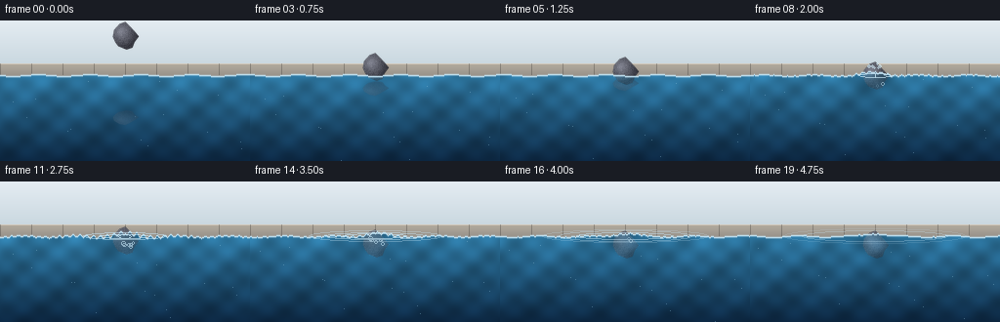
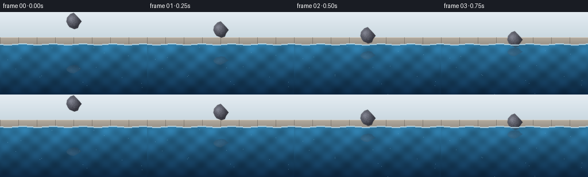

CODING AGENTS AS PIXEL WORLD MODELS
traex/Seed-2.1-Pro-0915 · phygen_007
点击播放 · 原生 RGB 像素
逐轮保存的候选
回放视频、检查图与代码变化。
每份候选均可单独播放。实际图片检查记录在下方工具轨迹中。
候选 01播放与检查图
点击播放 · 原生 RGB 像素

展开代码变化
--- 上一保存版本
+++ 本次保存版本
@@ -0,0 +1,283 @@
+"""Text-to-video: a stone gently placed on the surface of a pool.
+
+Pure numpy/PIL renderer. Produces 20 RGB frames (256x144, 4 fps) showing a
+side-view pool: a stone descends, touches the water, emits expanding ripples
+with small droplets and bubbles, and slowly settles while the surface keeps
+moving.
+"""
+
+import math
+
+import numpy as np
+from PIL import Image, ImageDraw
+
+import artifact_io
+
+W, H, N, FPS = 256, 144, 20, 4.0
+Y_SURF = 56 # resting water line
+CX = 128 # stone horizontal center
+STONE_R = 13
+TILE = 32 # stone sprite tile size
+T_CONTACT = 1.5 # seconds, contact happens at frame 6
+rng = np.random.default_rng(7)
+
+
+# --------------------------------------------------------------------------
+# Stone sprite (rendered and downsampled for smooth edges)
+# --------------------------------------------------------------------------
+def build_stone_tile():
+ scale = 4
+ big = Image.new("RGBA", (TILE * scale, TILE * scale), (0, 0, 0, 0))
+ draw = ImageDraw.Draw(big)
+ verts = []
+ for k in range(12):
+ angle = 2 * math.pi * k / 12 + rng.uniform(-0.12, 0.12)
+ rr = STONE_R * scale * rng.uniform(0.82, 1.12)
+ verts.append((
+ TILE * scale / 2 + rr * math.cos(angle),
+ TILE * scale / 2 + rr * math.sin(angle),
+ ))
+ draw.polygon(verts, fill=(112, 114, 120, 255))
+ tile = np.array(big.resize((TILE, TILE), Image.LANCZOS)).astype(np.float32)
+
+ yy, xx = np.mgrid[0:TILE, 0:TILE]
+ dx = (xx - TILE / 2 + 4.5) / STONE_R
+ dy = (yy - TILE / 2 + 5.0) / STONE_R
+ dist = np.sqrt(dx * dx + dy * dy)
+ shade = np.clip(1.18 - 0.55 * dist, 0.45, 1.25)[..., None]
+ speckle = rng.normal(0, 5.0, (TILE, TILE, 1))
+ alpha = (tile[..., 3:4] / 255.0)
+ tile[..., :3] = np.clip(tile[..., :3] * shade + speckle, 0, 255)
+ # Slight cool tint in the darker region and edge darkening.
+ tile[..., 2:3] = np.clip(tile[..., 2:3] + 6 * alpha, 0, 255)
+ tile[..., :3] *= 0.72 + 0.28 * alpha
+ return tile
+
+
+def build_reflection_tile(stone):
+ refl = stone[::-1, :, :].copy()
+ refl[..., :3] = refl[..., :3] * 0.55 + np.array([46, 96, 132]) * 0.45
+ refl[..., 3] *= 0.38
+ img = Image.fromarray(refl.astype(np.uint8), "RGBA")
+ img = img.resize((TILE, int(TILE * 0.55)), Image.LANCZOS)
+ return np.array(img).astype(np.float32)
+
+
+# --------------------------------------------------------------------------
+# Static background: sky gradient and pool coping band
+# --------------------------------------------------------------------------
+def build_background():
+ bg = np.zeros((H, W, 3), np.float32)
+ for y in range(H):
+ if y < 44:
+ p = y / 44
+ bg[y, :, 0] = 228 - 26 * p
+ bg[y, :, 1] = 236 - 20 * p
+ bg[y, :, 2] = 242 - 18 * p
+ else:
+ p = (y - 44) / 12
+ bg[y, :, 0] = 178 - 26 * p
+ bg[y, :, 1] = 170 - 24 * p
+ bg[y, :, 2] = 158 - 20 * p
+ # Tile seams on the coping.
+ for x in range(0, W, 32):
+ bg[44:56, x, :] *= 0.78
+ bg[44, :, :] = np.clip(bg[44, :, :] * 1.18, 0, 255) # lit top edge
+ return bg
+
+
+def water_base_color(yy, xx):
+ """Vertical water gradient, broadcast over the coordinate grids."""
+ p = np.clip((yy - Y_SURF) / (H - Y_SURF), 0, 1)[..., None]
+ top = np.array([46, 120, 162], np.float32)
+ bottom = np.array([12, 38, 64], np.float32)
+ return top * (1 - p) + bottom * p
+
+
+def stone_center(t):
+ if t <= T_CONTACT:
+ p = t / T_CONTACT
+ y = 16 + (Y_SURF - 4 - 16) * (1 - (1 - p) ** 3)
+ return y, 0.0
+ dt = t - T_CONTACT
+ depth = 14 * (1 - math.exp(-dt / 1.1))
+ depth += 0.5 * math.sin(dt * 3.2) * math.exp(-dt / 1.5)
+ return Y_SURF - 4 + depth, depth
+
+
+def main():
+ stone = build_stone_tile()
+ reflection = build_reflection_tile(stone)
+ background = build_background()
+
+ # Slowly drifting underwater motes.
+ motes = [(rng.uniform(0, W), rng.uniform(Y_SURF + 6, H),
+ rng.uniform(2.5, 6.0)) for _ in range(16)]
+ # Gentle splash droplets launched just after contact.
+ droplets = []
+ for _ in range(6):
+ droplets.append((
+ rng.uniform(-20, 20), # vx
+ rng.uniform(-42, -24), # vy (upward)
+ rng.uniform(0.8, 1.4), # radius
+ ))
+ # Bubbles emitted around the stone after contact.
+ bubbles = []
+ for _ in range(6):
+ bubbles.append((
+ rng.uniform(-9, 9), # x offset from stone center
+ rng.uniform(1.7, 2.4), # spawn time
+ rng.uniform(7, 12), # rise speed
+ rng.uniform(1.0, 1.8), # radius
+ ))
+
+ rows = np.arange(H)[:, None]
+ cols = np.arange(W)[None, :]
+ frames = []
+
+ for i in range(N):
+ t = i / FPS
+ img = background.copy()
+ yc, depth = stone_center(t)
+ contact = max(0.0, min(1.0, (t - T_CONTACT + 0.25) / 0.5))
+
+ # ---- Animated surface geometry ----------------------------------
+ xs = np.arange(W, dtype=np.float32)
+ dy_surf = 0.8 * np.sin(xs * 0.12 - t * 1.6)
+ rings = []
+ for emit in (1.5, 2.0, 2.55):
+ age = t - emit
+ if age < 0:
+ continue
+ rx = age * 34
+ if rx > 132:
+ continue
+ alpha = max(0.0, 210 * (1 - age / 3.3))
+ rings.append((rx, alpha))
+ wave = np.sin((np.abs(xs - CX) - rx) * 0.9)
+ wave *= np.exp(-np.abs(xs - CX) / 95.0)
+ dy_surf += 2.1 * wave * (alpha / 210.0) * math.exp(-age / 2.6)
+ # Contact dimple.
+ dy_surf -= 3.2 * contact * np.exp(-((xs - CX) / 15.0) ** 2)
+ ysurf = Y_SURF + dy_surf
+
+ # ---- Water body --------------------------------------------------
+ water_mask = rows >= ysurf[None, :]
+ water = water_base_color(np.broadcast_to(rows, (H, W)),
+ np.broadcast_to(cols, (H, W)))
+ caustic = (0.10 * np.sin(cols * 0.18 + t * 1.3)
+ * np.sin(rows * 0.22 - t * 0.7)
+ + 0.06 * np.sin((cols + rows) * 0.08 + t * 1.1))
+ water *= (1.0 + caustic[..., None])
+ img = np.where(water_mask[..., None], water, img)
+
+ # Underwater motes.
+ for mx, my, speed in motes:
+ x = int(mx + 4 * math.sin(t + my)) % W
+ y = int((my - speed * t) % (H - Y_SURF - 4) + Y_SURF + 4)
+ if water_mask[y, x]:
+ img[y, x] = img[y, x] * 0.65 + np.array([150, 200, 225]) * 0.35
+
+ # ---- Soft reflection of the stone on the water ------------------
+ refl_strength = math.exp(-max(0.0, t - T_CONTACT) * 1.3)
+ if refl_strength > 0.08:
+ rh = reflection.shape[0]
+ yr = 2 * ysurf[CX] - yc + 3
+ x0 = int(round(CX - TILE / 2))
+ y0 = int(round(yr - rh / 2))
+ a = reflection[..., 3:4] / 255.0 * refl_strength
+ region = img[y0:y0 + rh, x0:x0 + TILE]
+ mask = water_mask[y0:y0 + rh, x0:x0 + TILE, None]
+ region[:] = np.where(
+ mask, region * (1 - a) + reflection[..., :3] * a, region)
+
+ # ---- Contact shadow in the water --------------------------------
+ if contact > 0:
+ halo = np.exp(-(((cols - CX) / 20.0) ** 2
+ + ((rows - (ysurf[CX] + 7)) / 12.0) ** 2))
+ halo = (halo * contact * 0.28 * water_mask)[..., None]
+ img *= 1 - halo
+
+ # ---- Stone, with underwater tint on the submerged part ----------
+ x0 = int(round(CX - TILE / 2))
+ y0 = int(round(yc - TILE / 2))
+ a = stone[..., 3:4] / 255.0
+ region = img[y0:y0 + TILE, x0:x0 + TILE]
+ region[:] = region * (1 - a) + stone[..., :3] * a
+ world_y = np.arange(y0, y0 + TILE)[:, None, None]
+ surface_here = ysurf[x0:x0 + TILE][None, :, None]
+ under = (world_y > surface_here) & (stone[..., 3:4] > 20)
+ water_here = water[y0:y0 + TILE, x0:x0 + TILE]
+ tinted = region * 0.5 + water_here * 0.5
+ tinted *= (1 + caustic[y0:y0 + TILE, x0:x0 + TILE][..., None] * 0.5)
+ region[:] = np.where(under, tinted, region)
+
+ # ---- Highlighted surface line -----------------------------------
+ for x in range(W):
+ y = int(round(ysurf[x]))
+ for yy, k in ((y, 0.95), (y + 1, 0.35), (y - 1, 0.25)):
+ if 0 <= yy < H:
+ img[yy, x] = img[yy, x] * (1 - k) + np.array(
+ [196, 228, 244]) * k
+
+ # ---- Ripple rings, droplets and bubbles (RGBA overlay) ----------
+ overlay = Image.new("RGBA", (W, H), (0, 0, 0, 0))
+ od = ImageDraw.Draw(overlay)
+ for rx, alpha in rings:
+ ry = max(2.0, rx * 0.075)
+ od.ellipse(
+ [CX - rx, Y_SURF - ry, CX + rx, Y_SURF + ry],
+ outline=(202, 234, 250, int(alpha)), width=1)
+
+ age = t - T_CONTACT - 0.18
+ if 0 <= age <= 0.95:
+ for vx, vy, rad in droplets:
+ dx = vx * age
+ dy = vy * age + 0.5 * 62 * age * age
+ x = CX + dx
+ y = Y_SURF - 2 + dy
+ fade = int(220 * (1 - age / 0.95))
+ od.ellipse([x - rad, y - rad, x + rad, y + rad],
+ fill=(214, 240, 252, fade))
+
+ for bx, spawn, speed, rad in bubbles:
+ age_b = t - spawn
+ if 0 <= age_b <= 2.4:
+ x = CX + bx + 1.6 * math.sin(age_b * 5 + bx)
+ y = (yc + STONE_R - 3) - speed * age_b
+ if y > Y_SURF + 2:
+ fade = int(150 * min(1.0, age_b * 3)
+ * min(1.0, (2.4 - age_b) * 2))
+ od.ellipse([x - rad, y - rad, x + rad, y + rad],
+ outline=(200, 232, 248, fade), width=1)
+
+ ov = np.array(overlay).astype(np.float32)
+ oa = ov[..., 3:4] / 255.0
+ img = img * (1 - oa) + ov[..., :3] * oa
+
+ frames.append(np.clip(img, 0, 255).astype(np.uint8))
+
+ frames = np.stack(frames)
+ artifact_io.save(frames, ".")
+
+ # Numeric self-checks (visual tools are unavailable in this environment).
+ diffs = np.abs(frames[1:].astype(np.int16)
+ - frames[:-1].astype(np.int16)).mean(axis=(1, 2, 3))
+ print("frames", frames.shape, frames.dtype)
+ print("mean inter-frame change:", np.round(diffs, 2))
+ ascii_preview(frames[[0, 6, 12, 19]])
+
+
+def ascii_preview(shots):
+ chars = " .:-=+*#%@"
+ for idx, frame in zip((0, 6, 12, 19), shots):
+ lum = frame.mean(axis=2)
+ small = lum[::4, ::4]
+ print(f"-- frame {idx} --")
+ for row in small:
+ print("".join(chars[min(len(chars) - 1, int(v / 256 * len(chars)))]
+ for v in row))
+
+
+if __name__ == "__main__":
+ main()
候选 02播放与检查图
点击播放 · 原生 RGB 像素


展开代码变化
--- 上一保存版本
+++ 本次保存版本
@@ -58,7 +58,7 @@
refl = stone[::-1, :, :].copy()
refl[..., :3] = refl[..., :3] * 0.55 + np.array([46, 96, 132]) * 0.45
refl[..., 3] *= 0.38
- img = Image.fromarray(refl.astype(np.uint8), "RGBA")
+ img = Image.fromarray(refl.astype(np.uint8))
img = img.resize((TILE, int(TILE * 0.55)), Image.LANCZOS)
return np.array(img).astype(np.float32)
@@ -97,12 +97,12 @@
def stone_center(t):
if t <= T_CONTACT:
p = t / T_CONTACT
- y = 16 + (Y_SURF - 4 - 16) * (1 - (1 - p) ** 3)
+ y = 18 + (Y_SURF - STONE_R - 18) * (1 - (1 - p) ** 3)
return y, 0.0
dt = t - T_CONTACT
- depth = 14 * (1 - math.exp(-dt / 1.1))
- depth += 0.5 * math.sin(dt * 3.2) * math.exp(-dt / 1.5)
- return Y_SURF - 4 + depth, depth
+ depth = 6.0 * (1 - math.exp(-dt / 1.0))
+ depth += 0.4 * math.sin(dt * 3.2) * math.exp(-dt / 1.5)
+ return Y_SURF - STONE_R + depth, depth
def main():
@@ -118,8 +118,8 @@
for _ in range(6):
droplets.append((
rng.uniform(-20, 20), # vx
- rng.uniform(-42, -24), # vy (upward)
- rng.uniform(0.8, 1.4), # radius
+ rng.uniform(-28, -16), # vy (upward)
+ rng.uniform(0.7, 1.1), # radius
))
# Bubbles emitted around the stone after contact.
bubbles = []
候选 03播放与检查图
可观测工具轨迹
实际执行的命令与返回图片。
命令 1exit 0
/bin/bash -lc 'ls -la && cat prompt.txt && cat GENERATION_RULES.md && cat task_spec.json'
命令 2exit 0
/bin/bash -lc 'cat artifact_io.py && cat player_template.html'
命令 3exit 0
/bin/bash -lc 'cd . && python generate.py'
命令 4exit 0
/bin/bash -lc "cd . && grep -n \"fromarray\\|y = 16\\|y = 18\" generate.py"
命令 5exit 0
/bin/bash -lc 'cd . && python generate.py 2>&1 | head -8 && ls -la && ls frames | head -25'
保存候选 3 份；完成命令 5 次；可验证图片返回 0 张。原始 API 响应与完整日志保留在本地。